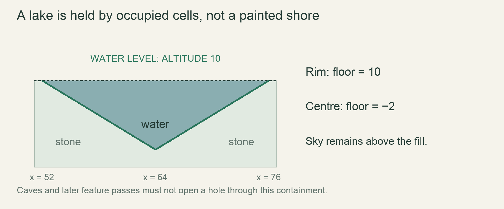

M4 / A persistent worldLesson 71 of 100 · ~5 min reading + build time
Place contained lakes caves and features
Generate the same contained lake from either side of a chunk border, and explain why it cannot drain on activation.
Previously: Blend biomes and place stable strata. Keep that working result available before starting this lesson.
Why we need this now
A beautiful bowl drawn on top of water is not a contained lake. The actual occupied cells must hold the liquid, and generation must agree when neighbouring chunks are requested in different orders.
Your result: Generate the same contained lake from either side of a chunk border, and explain why it cannot drain on activation.

01Start with the failure, not the noise function
Imagine a basin whose left wall is in chunk A and right wall is in chunk B. If A fills water before B supplies its wall, activation can spill the lake. Generating more noise does not fix this. We need a world-coordinate feature definition that both chunks can evaluate independently. The feature owns its bowl profile and fill level; chunks merely sample it.
Use a handcrafted cross-section first: solid walls, level water and air above. Run 600 ticks before adding procedural placement. If this tiny fixture leaks, debug occupancy, absorption or boundaries before blaming generation.
02Bound the neighbourhood that can affect a cell
The design caps a lake width at 96 cells. Represent a candidate by centre, half-width and rim altitude. A chunk only asks for candidate centres close enough to overlap it. This is a finite dependency, unlike asking whether an arbitrary distant outlet exists somewhere in an infinite valley.
For a teaching bowl, let depth decrease linearly toward the rim: depth = half_width - distance_from_centre. A cell below the resulting floor is stone, between floor and water level is water, and above is air. This deliberately angular bowl proves the spatial contract; a smooth profile can replace the depth calculation later without changing ownership.
03Resolve feature ordering explicitly
Apply base strata, candidate bowl carving and water placement in a fixed order. Two overlapping bowls need a tie-break, such as the lowest feature ID, rather than whichever chunk happens to load first. Caves must respect the sea/surface exclusion band. Otherwise a valid lake can be drained by a later cave pass.
Water over generated porous soil must begin with the approved saturation state. If fresh water immediately disappears through absorption, that is a generation-state mismatch, not an excuse to weaken the rest test. Keep containment geometry and moisture initialization in separate assertions.
04Integrate one pure sampling function
The function below receives a world coordinate and returns a material classification. It has no mutable RNG, no chunk cache and no dependence on camera position. Sampling the same coordinate twice therefore produces the same result. In the real generator combine it with bounded candidate lookup and the existing material table.
Save the example as indicated, then call the sampler through your chunk-generation loop. Generate the left and right chunks in opposite orders and compare their output hashes. Finally activate the whole bowl, because pure generation equality cannot prove the water simulation rests.
Read → predict → run → change
Walk through the working example
Complete focused experiment — save as examples/lesson_071.rs, then run cargo run --example lesson_071 from game/.
Download this worked example ↧
#[derive(Debug, PartialEq)]
enum Kind { Air, Water, Stone }
fn sample_lake(x: i32, y: i32, centre: i32, half: i32, level: i32) -> Kind {
assert!(half > 0);
let distance = (x - centre).abs();
if distance > half { return Kind::Air; }
let floor = level - (half - distance);
if y <= floor { Kind::Stone }
else if y <= level { Kind::Water }
else { Kind::Air }
}
fn main() {
assert_eq!(sample_lake(64, 8, 64, 12, 10), Kind::Water);
assert_eq!(sample_lake(52, 10, 64, 12, 10), Kind::Stone);
assert_eq!(sample_lake(64, 11, 64, 12, 10), Kind::Air);
println!("bowl centre, rim and open sky agree");
}Read what each part does
- y is world altitude here, increasing upward. This is not the early downward screen-row convention.
- The rim at distance == half is stone even at the fill level, containing water in the teaching profile.
- The Air result outside the feature means no lake override; in production preserve base terrain there rather than replacing it with air.
Expected result
bowl centre, rim and open sky agreeExact version numbers, paths and compiler wording may differ. Compare the behavior and file locations, not incidental output formatting.
Prediction · repair · transfer
Exercises you actually do
Write a prediction or make an attempt before opening a solution. Use the hint if stuck; then compare reasoning and verify with the stated check. A different implementation is fine when it satisfies the same contract.
Trace the cross-section
At x=64, centre=64, half=12 and level=10, classify altitudes -3, 0, 10 and 11.
Need a hint?
Calculate floor before choosing a material.
Worked solution
The floor is -2. Altitude -3 is Stone; 0 and 10 are Water; 11 is Air. The lake does not decide which altitude is on the screen.
How to verify your result
Write four assertions with those outcomes.
Put the lake on a seam
Move the centre to a coordinate exactly divisible by 64. Generate neighbouring chunks in both orders.
Need a hint?
Feature data should be computed from world identity, not load order.
Worked solution
A centre of 64 puts the feature across chunks 0 and 1. Both evaluate the same centre/profile. Generate A then B and B then A, concatenate by coordinate and compare equal arrays.
How to verify your result
The combined arrays and activation behavior agree.
Make a deliberately broken cave
Carve one air cell through a bowl wall below the water level. Explain the resulting rest-test failure.
Need a hint?
A lake is only contained by actual cells.
Worked solution
Water exits through the hole under the existing movement rule. Restore the wall or constrain the cave feature. Changing the decorative shoreline cannot repair a missing solid.
How to verify your result
The broken fixture moves water; restoring the cell prevents that escape.
When it goes wrong
Start with the observed symptom. Change one assumption at a time instead of pasting fixes until the error disappears.
Lake drains at first activation
What is happening: Bowl geometry or generated moisture is inconsistent with movement/absorption.
Try this: Inspect a tiny cross-section and saturation before widening the fixture.
Seam through the bowl
What is happening: Features were chosen by mutable RNG consumption or different local origins.
Try this: Select candidates in world coordinates with a deterministic tie-break.
Caves erase a lake wall
What is happening: Feature ordering has no exclusion constraint.
Try this: Check cave placement against the generated surface/sea and bounded feature geometry.
Explain it without the example
Why search bounded lake centres instead of the entire basin outlet network?
Reasoning to compare
A bounded feature gives a finite generation dependency. An outlet could lie arbitrarily far away, making unrestricted basin discovery unsuitable for local generation.
Self-check only: test a prediction or ask your tutor if anything still feels arbitrary.
For your YouTube series
Turn the lesson into an episode
Open with the problem or result
Show a lake draining through one missing cell, then make the generator guarantee containment.
Teach in this order
- Reveal the one-cell leak
- Derive a bounded bowl from centre and rim
- Trace three sample coordinates
- Generate opposite chunk orders
- Activate and run the rest fixture
Record this demonstration
Record a zoomed teaching cross-section, then a native-size contained lake after 600 ticks.
Close with what the viewer can now explain
A lake is a generated occupancy guarantee, not a painted blue region.
A lesson can span several recordings. The episode beats are a teaching outline, not a claim that every viewer learns at the same speed.
Finish with evidence
Lake water is level and contained, caves do not drain the sea at first activation, and features agree across borders.
Make one small variation without copying: predict it, run it and explain any difference. On another day, repeat one exercise from memory before starting the next lesson. Ask your tutor about any step you can execute but cannot explain.
This is an attempt marker, not a grade. Learning records are written only after demonstrated understanding.
Primary sources for this lesson
Use sources to verify the mechanism. The lesson itself supplies the instructions; the links are not a substitute for teaching them.